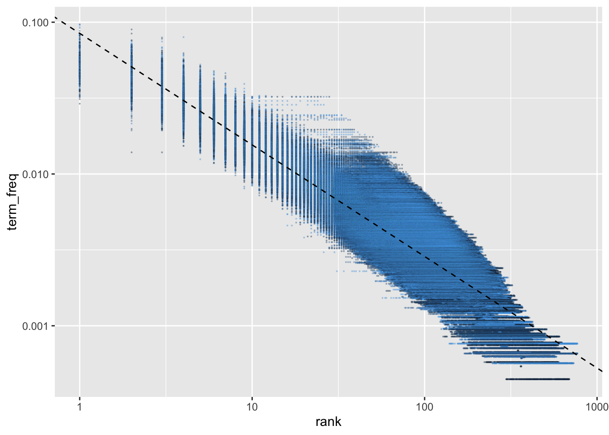

Show me the code
library(tidyverse)
library(here)
library(tidytext)
source(here('common_fxns.R'))library(tidyverse)
library(here)
library(tidytext)
source(here('common_fxns.R'))topic_df <- load_articles()Across all abstracts, identify most commonly used words (whether keywords or search terms or otherwise), using a \(tf-idf\) (term frequency x inverse doc frequency) approach, where \[tf_{\text{word}} = \frac{n_{\text{word}}} {n_{\text{all words}}}\] and \[idf = \ln \left(\frac{n_{\text{abstracts}}}{n_{\text{abstracts containing term}}}\right)\] or in other words, \[idf = - \ln \left(\frac{n_{\text{abstracts containing terms}}}{n_{\text{abstracts}}}\right)\]
The product \(tf \times idf\) indicates words that are relatively important to one abstract (based on frequency of the term within that abstract) within the overall collection of abstracts (based on how infrequently the term shows up in other abstracts). Terms that show up in all abstracts (e.g., stop words) will have an \(idf \rightarrow 0\) equal to or near 0, as the ratio \(\rightarrow 1\).
abstr_df <- topic_df %>%
filter(topic == 'abstract') %>%
select(doc_id, text)
abstr_words <- abstr_df %>%
unnest_tokens(input = text, output = word, token = 'words') %>%
group_by(doc_id, word) %>%
summarize(n = n()) %>%
group_by(doc_id) %>%
mutate(term_freq = n / sum(n)) %>%
ungroup()abstr_freq_by_rank <- abstr_words %>%
group_by(doc_id) %>%
arrange(desc(term_freq)) %>%
mutate(rank = 1:n()) %>%
ungroup() %>%
anti_join(stop_words, by = c('word')) %>%
filter(nchar(word) > 2)
rank_subset <- abstr_freq_by_rank %>%
filter(rank < 50)
freq_rank_lm <- lm(log10(term_freq) ~ log10(rank), data = rank_subset)
# Coefficients:
# (Intercept) log10(rank)
# -1.1059 -0.7098
ggplot(abstr_freq_by_rank,
aes(x = rank, y = term_freq, color = doc_id)) +
geom_point(alpha = .3, size = .1, show.legend = FALSE) +
geom_abline(intercept = freq_rank_lm$coefficients[1],
slope = freq_rank_lm$coefficients[2],
linetype = 'dashed') +
scale_x_log10() +
scale_y_log10()
Zipf’s law: Frequency of a word is inversely proportional to rank… log-log plot shows a (basically) constant slope of -0.735 for terms ranked less than 50.
abstr_idf <- abstr_words %>%
mutate(n_titles = n_distinct(doc_id)) %>%
group_by(word) %>%
summarize(idf = -log(n_distinct(doc_id) / first(n_titles)))
abstr_tf_idf <- abstr_words %>%
left_join(abstr_idf, by = c('word')) %>%
mutate(tf_idf = term_freq * idf) %>%
arrange(desc(tf_idf))
head(abstr_tf_idf, 50)# A tibble: 50 × 6
doc_id word n term_freq idf tf_idf
<int> <chr> <int> <dbl> <dbl> <dbl>
1 4271 ptsc 19 0.0742 9.52 0.706
2 2696 airnow 4 0.0702 9.52 0.668
3 6343 smfi 22 0.0675 9.52 0.642
4 5276 underground 12 0.0968 5.73 0.555
5 621 meat 14 0.0765 7.03 0.538
6 11015 ginseng 12 0.0553 9.52 0.526
7 1973 epc 14 0.0619 8.42 0.521
8 8920 chilling 17 0.0607 8.13 0.494
9 4452 telework 8 0.0559 8.82 0.494
10 11874 upgs 16 0.0514 9.52 0.490
# ℹ 40 more rows